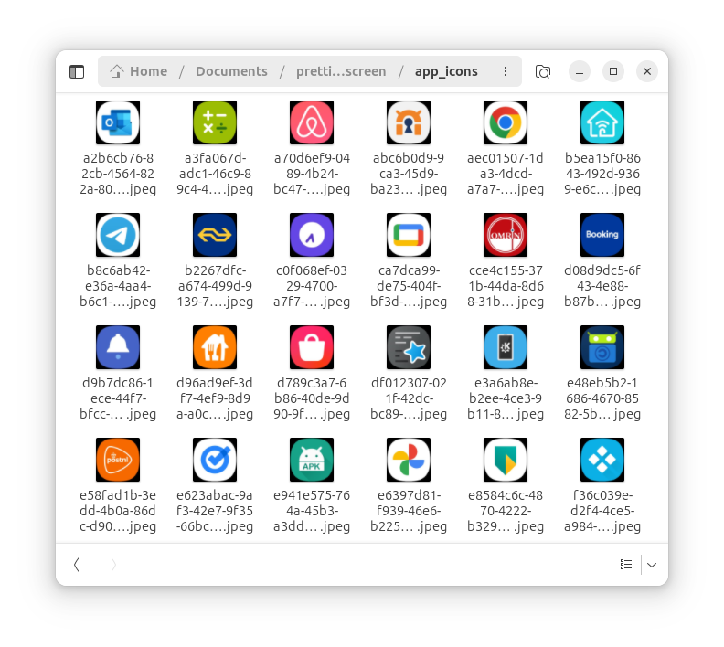
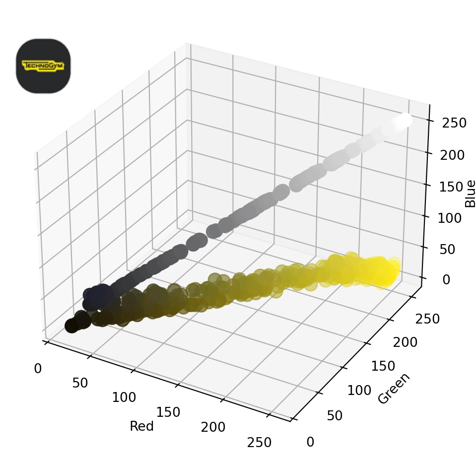
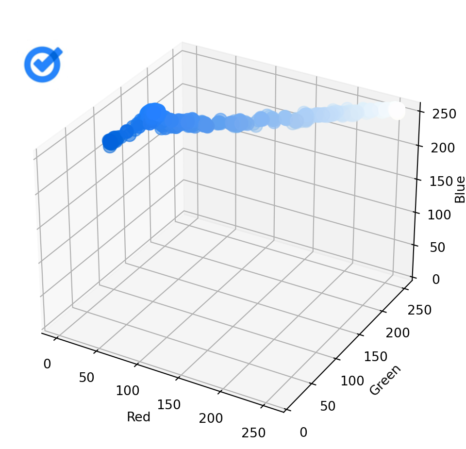
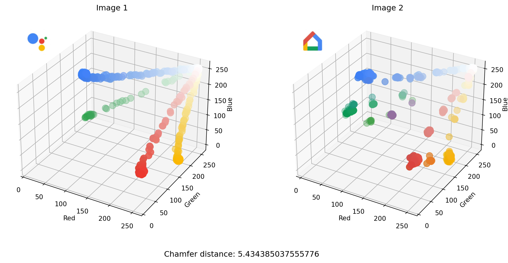
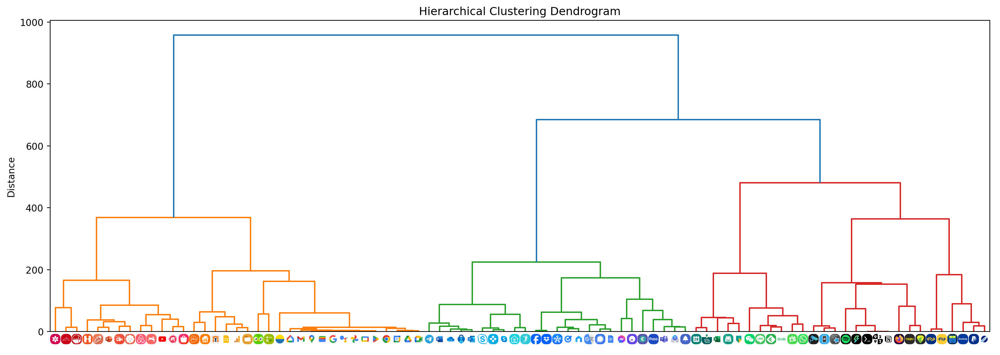
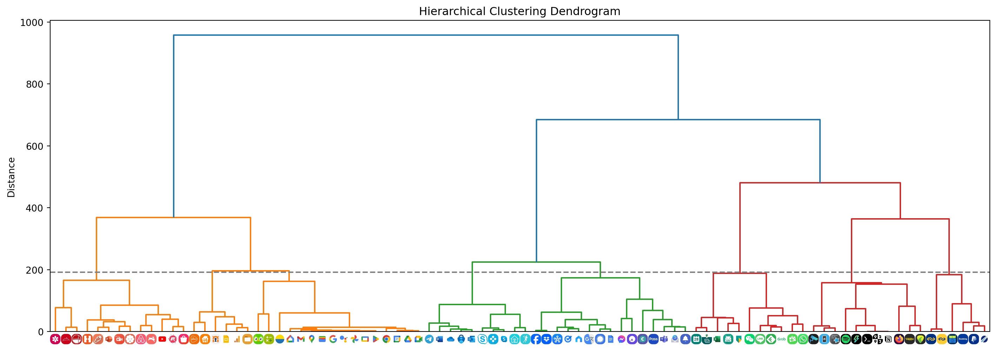
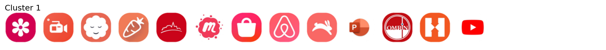
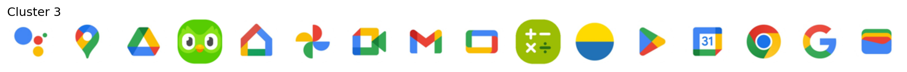
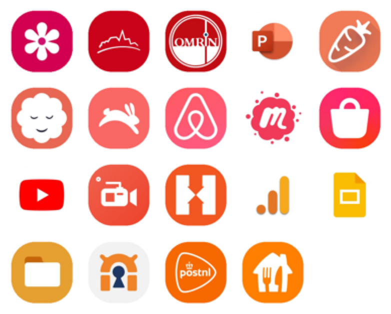

import numpy as np
import glob
import random
import math
import matplotlib.pyplot as plt
import ipywidgets as widgets
from PIL import Image, ImageDraw
from scipy.spatial import KDTree
from ipywidgets import interact, interact_manual
from scipy.cluster.hierarchy import linkage, dendrogram, fcluster
from matplotlib.offsetbox import OffsetImage, AnnotationBbox
from mpl_toolkits.mplot3d import Axes3DDid you know the average Dutch person spends 2 hours and 46 minutes daily consuming content on their phone? Surprisingly, this is still quite a bit below the global average as people worldwide spend an average of 3 hours and 50 minutes on their mobiles each day. The Filipinos top the chart, with a whopping 5 hours and 20 minutes spent daily on their smartphones. For statistics on other countries, click here.
Given the insane amount of time we spend on our phones, it’s only logical to consider its mental health effects organize your apps in the neatest way possible. In this post, I’ll show how to do just that using some math and Python.
The best way to organize one’s apps
There are different ways to organize apps on the home screen of your phone. You can:
- group apps into categories such as travel, chat, or social media; or
- arrange them alphabetically; or
- organize apps by color.
While some people may claim that the first two ways of organizing helps you find apps faster, I couldn’t care less about issues like speed or usability. I just want my home screen to look pretty. Organizing by color is clearly the superior choice. Who needs efficiency when you can have aesthetics?
However, organizing apps by color is challenging because many apps have multiple colors in various shades. This makes it difficult to group them. To make our home screens look good, we want to arrange our apps in such a way that the color difference between adjacent icons is minimal.
The solution I describe in this post is based on the following ideas:
- We can quantify color differences between icons using the Chamfer distance function.
- Finding the best arrangement of apps (where color differences are minimized) is equivalent to finding the shortest Hamiltonian path through a graph. In this graph, vertices are the app icons, and edges are the color differences.
- To decide which apps should be placed together on the same home screen, we can use hierarchical clustering.
Read on to see how it all comes together.
Importing libraries
We’ll start by importing some dependencies.
Getting the icons
To organize our apps by color, we first need to get the icons for all the apps installed on our phones. I found that the easiest and most reliable way to do this (on Android) is by using the Apk Analyzer app.
Once you have saved all icons, transfer them to your computer and place them in a folder called app_icons.

Apk Analyzer saves the icon files as JPEGs, which don’t support transparency. As can be seen in the image above, this will cause each icon to have a black background. We’ll need to remove this programmatically later.
The following code finds all JPEG files in the app_icons folder and saves their names to a list.
files = glob.glob("app_icons/*.jpeg")Loading all images and removing the background
Now that we have a list of file names, we can load the images. As mentioned above, we’ll need to remove the black background. To do this, we’ll create a mask that can be applied to each image. The following functions will handle creating and applying this mask to each image.
def create_mask(size):
# Create a mask image with a transparent (black) background
mask = Image.new("L", size, 0)
margin = int(size[0] * 0.03)
radius = int(size[0] * 0.37)
# Draw a white rounded rectangle on the mask
draw = ImageDraw.Draw(mask)
draw.rounded_rectangle([(margin, margin), (size[0] - margin, size[1] - margin)], radius=radius, fill=255)
return maskdef apply_mask(image, mask):
# Create a white background image
white_bg = Image.new("RGBA", image.size, (255, 255, 255, 255))
# Composite the images using the mask
result = Image.composite(image, white_bg, mask)
return result.convert("RGB")def remove_background(image):
mask = create_mask(image.size)
return apply_mask(image, mask)We’ll resize each image to 64x64 to ensure they all have the same size.
size = (64, 64)The mask that is applied to each image looks like this:
mask = create_mask((265,265)).resize(size)
maskNext, let’s load all images and remove their backgrounds.
images = [remove_background(Image.open(f)).resize(size) for f in files]Plotting all images in a grid
The helper function below will display all the images in a grid.
def plot_image_grid(images, ncols=None, title=''):
ncols = ncols or int(np.sqrt(len(images)))
nrows, ncols = (len(images) + ncols - 1) // ncols, ncols
imgs = images + [None] * (nrows * ncols - len(images))
fig, axes = plt.subplots(nrows, ncols, figsize=(ncols, nrows))
if title:
fig.suptitle(title, x=0.125, ha='left')
for img, ax in zip(imgs, axes.flatten()):
if img is not None:
ax.imshow(img)
ax.axis('off')Let’s call this function to display our loaded images.
plot_image_grid(images, 15)Such a chaotic look! Let’s quickly move on to organizing this mess!
The Chamfer distance
In order to quantify the difference in color palette between two app icons we will use the Chamfer distance. This particular distance metric is a measure of dissimilarity between two sets of points. It calculates how far points in one set are from the nearest points in another set, averaged over all points.
In our case, each set represents all the pixels in one image. Each pixel has an RGB value that represents one point. The smaller the Chamfer distance, the more similar in color the two images are.
Its symmetric version can be defined as follows:
\[d_{\text{CD}}(A, B) = \frac{1}{|A|} \sum_{a \in A} \min_{b \in B} \| a - b \|_2 + \frac{1}{|B|} \sum_{b \in B} \min_{a \in A} \| b - a \|_2\]
where
- \(\| \cdot \|_2\) denotes the Euclidean distance.
- \(\min_{b \in B} \| a - b \|_2\) represents the minimum Euclidean distance from a point \(a \in A\) to any point in \(b \in B\).
- \(\min_{a \in A} \| b - a \|_2\) represents the minimum Euclidean distance from a point \(b \in B\) to any point in \(a \in A\).
- \(|A|\) and \(|B|\) denote the number of points in sets \(A\) and \(B\), respectively.
N.B.: You might see variations of this distance metric. When used as a loss function the Euclidian distances are generally squared. This makes the resulting function smooth and differentiable which is useful in gradient-based optimization algorithms. This isn’t needed in our situation.
The following function calculates the Chamfer distance. It was taken from here. It uses KDTree for efficient nearest neighbor searches.
def chamfer_distance(a, b):
tree = KDTree(b)
dist_a = tree.query(a)[0]
tree = KDTree(a)
dist_b = tree.query(b)[0]
return np.mean(dist_a) + np.mean(dist_b)Computing the Chamfer distance between two images
Let’s explore a bit more visually how the Chamfer distance is used to quantify the dissimilarity between the color palettes of two images.
As an example we’ll compute the Chamfer distance between the first two images we have loaded.
plot_image_grid([images[0],images[1]], 2)The following function creates a 3D scatterplot to visualize the RGB values of an image’s pixels. In this plot, the x-axis, y-axis, and z-axis represent the red, green, and blue color values, respectively. Each point in the scatterplot corresponds to a pixel, and its position is determined by the pixel’s RGB values.
def plot_image_colors(image, ax=None, title=''):
boolean_mask = np.array(mask).astype(bool).flatten()
data = np.array(image).reshape((64*64, -1))[boolean_mask]
R, G, B = data[:, 0], data[:, 1], data[:, 2]
colors = data / 255.0
if not ax:
fig = plt.figure(figsize=(7, 6))
ax = fig.add_subplot(111, projection='3d')
else:
fig = ax.get_figure()
scatter = ax.scatter(R, G, B, c=colors, s=100)
ax.set_xlabel('Red')
ax.set_ylabel('Green')
ax.set_zlabel('Blue', labelpad=0)
ax.zaxis.label.set_rotation(90)
ax.xaxis.set_ticks(np.arange(0, 256, 50))
ax.yaxis.set_ticks(np.arange(0, 256, 50))
ax.zaxis.set_ticks(np.arange(0, 256, 50))
ax.set_title(title)
# Add inset axis for the image
inset_ax = fig.add_axes([ax.get_position().x0, ax.get_position().y1 - 0.15, 0.1, 0.1])
inset_ax.imshow(image)
inset_ax.axis('off')If we plot the colors of the first image, we get the following:
plot_image_colors(images[0])
Now let’s do the same for the second image:
plot_image_colors(images[1])
As you can see, in this case, the points in one scatterplot are, on average, quite far from the nearest point in the other scatterplot. Calculating the Chamfer distance between the two sets of points gives us a relatively high value.
# Create a boolean mask
boolean_mask = np.array(mask).astype(bool).flatten()
# The number of pixels
num_pixels = math.prod(size)
chamfer_distance(np.array(images[0]).reshape((num_pixels, -1))[boolean_mask], np.array(images[1]).reshape((num_pixels, -1))[boolean_mask])226.8853693815226Note how a boolean mask is applied to exclude the pixels that are not part of the actual icon. In other words, we exclude all pixels that lie outside the rounded rectangle. Furthermore, the image is converted to a numpy array and reshaped in such a way that each row represents the RGB value of one pixel as this is how the chamfer_distance function expects it.
Comparing images pairwise
The code below allows us to interactively compare pairs of images side-by-side.
np_images_foreground = [np.array(image).reshape((num_pixels, -1))[boolean_mask] for image in images]
def plot_images_colors_side_by_side(image_num1, image_num2):
image1 = images[image_num1]
image2 = images[image_num2]
fig = plt.figure(figsize=(14, 6))
# First subplot
ax1 = fig.add_subplot(121, projection='3d')
plot_image_colors(image1, ax1, 'Image 1')
# Second subplot
ax2 = fig.add_subplot(122, projection='3d')
plot_image_colors(image2, ax2, 'Image 2')
fig.text(0.5, 0.02, f'Chamfer distance: {chamfer_distance(np_images_foreground[image_num1], np_images_foreground[image_num2])}', ha='center', va='center', fontsize=12)
plt.show()
_ = interact(plot_images_colors_side_by_side,
image_num1=widgets.IntSlider(min=0, max=len(images) - 1, step=1, value=0, description="Image 1: "),
image_num2=widgets.IntSlider(min=0, max=len(images) - 1, step=1, value=1, description="Image 2: ")
)
The sliders allow us to select and compare different icons. The Chamfer distance between the two images selected above is in this case quite small. You can see how that makes sense as points in one scatterplot are closer, on average, to a nearest point in the other scatterplot.
Computing the distance matrix
The distance matrix contains the Chamfer distance between each pair of images and is computed using the following code:
# Initialize the distance matrix
num_sets = len(np_images_foreground)
distance_matrix = np.zeros((num_sets, num_sets))
# Populate the distance matrix
for i in range(num_sets):
for j in range(i + 1, num_sets):
distance = chamfer_distance(np_images_foreground[i], np_images_foreground[j])
distance_matrix[i, j] = distance
distance_matrix[j, i] = distance # Use symmetryComputing the Chamfer distance between each pair of images may take a minute or so depending on the speed of your hardware.
The maximum value in the distance matrix tells us which two images are most dissimilar.
start, end = np.unravel_index(np.argmax(distance_matrix), distance_matrix.shape)plot_image_grid([images[start],images[end]], 2)It’s between these two images that we want to find a Hamiltonian path.
Finding the shortest Hamiltonian path
The shortest Hamiltonian path traverses all vertices in a graph exactly once while minimizing the total distance traveled. Here each vertex corresponds to an image, and the edges are weighted based on the Chamfer distance between these images. Such a path should yield a visually pleasing sequence of app icons.
The following code applies simulated annealing to attempt to find the shortest Hamiltonian path in a graph represented by a distance matrix.
def total_distance(path, distance_matrix):
return sum(distance_matrix[path[i], path[i + 1]] for i in range(len(path) - 1))
def shortest_hamiltonian_path(distance_matrix, start, end, initial_temp, cooling_rate, stopping_temp, initial_path=None):
current_path = initial_path or list(range(distance_matrix.shape[0]))
current_path.remove(start)
if start != end:
current_path.remove(end)
current_path = [start] + current_path + [end]
n = len(current_path)
current_distance = total_distance(current_path, distance_matrix)
temperature = initial_temp
while temperature > stopping_temp:
# Generate a neighbor by reversing a subtour (excluding start and end)
i, j = sorted(random.sample(range(1, n - 1), 2))
new_path = current_path[0:i] + current_path[i:j+1][::-1] + current_path[j+1:]
new_distance = total_distance(new_path, distance_matrix)
# Acceptance probability
if new_distance < current_distance or random.random() < np.exp((current_distance - new_distance) / temperature):
current_path, current_distance = new_path, new_distance
temperature *= cooling_rate
return current_path, current_distanceWe will use shortest_hamiltonian_path to find a path between the two app icons with the most dissimilar color schemes. This function requires three parameters to control the temperature schedule: initial temperature (initial_temp), cooling rate (cooling_rate), and stopping temperature (stopping_temp). The initial temperature starts high to allow broad exploration of the search space, accepting worse solutions to avoid local minima. The cooling rate gradually reduces the temperature, shifting focus to refining the solution. The process continues until the temperature drops below the stopping temperature, ensuring the algorithm terminates efficiently while aiming for an optimal solution.
initial_temp = 400000
cooling_rate = 0.99995
stopping_temp = 1e-8
path, distance = shortest_hamiltonian_path(distance_matrix, start, end, initial_temp, cooling_rate, stopping_temp)
print("Shortest Hamiltonian path:", path)
print("Distance:", distance)Shortest Hamiltonian path: [23, 72, 5, 35, 53, 63, 44, 78, 8, 11, 22, 65, 77, 39, 51, 4, 33, 10, 38, 19, 0, 14, 27, 60, 40, 66, 87, 32, 83, 30, 9, 37, 82, 34, 17, 61, 75, 15, 49, 55, 2, 25, 62, 69, 26, 46, 74, 68, 24, 54, 57, 80, 71, 7, 86, 59, 21, 29, 28, 79, 70, 56, 41, 31, 81, 3, 13, 16, 42, 12, 36, 84, 58, 6, 18, 50, 45, 76, 52, 85, 73, 64, 20, 47, 1, 48, 43, 67]
Distance: 2201.440737366966Once the function returns a path we can use this to reorder the images into a more visually pleasing sequence.
sorted_images = [images[i] for i in path]plot_image_grid(sorted_images, 15)Doesn’t this look amazing!? Honestly, this belongs in a museum.
There’s one issue though. This many apps won’t fit on the same home screen and distributing these apps over several screens breaks the visual flow. It just won’t look as good.
What we want to do is first cluster the apps by color scheme, and following that, choose which of these clusters can be placed on the same home screen. Then we try to find a shortest Hamiltonian path per screen. We’ll use hierarchical clustering to find a good grouping.
Grouping apps using hierarchical clustering
We can use the previously calculated distance matrix to perform hierarchical clustering. I decided to go with Ward’s linkage which tends to create more compact and spherical clusters.
# Convert the distance matrix to a condensed distance matrix
# The condensed distance matrix contains the upper triangular part of the distance matrix
condensed_distance_matrix = distance_matrix[np.triu_indices_from(distance_matrix, k=1)]
# Perform hierarchical clustering using the linkage method
Z = linkage(condensed_distance_matrix, method='ward')Ward’s linkage is an agglomerative method which means that it starts with each image as its own cluster and merges pairs based on minimal variance increase. This process forms a hierarchical cluster sequence that can be visualized in a dendrogram.
def plot_dendrogram(max_d=0):
fig, ax = plt.subplots(figsize=(18, 6))
dendrogram(Z, ax=ax)
ax.set_title('Hierarchical Clustering Dendrogram')
ax.set_ylabel('Distance')
if max_d:
ax.axhline(y=max_d, linestyle='--', color='grey')
tick_labels = ax.xaxis.get_ticklabels()
for i in range(len(images)):
ib = OffsetImage(images[int(tick_labels[i].get_text())], zoom=.18)
ib.image.axes = ax
ab = AnnotationBbox(ib, tick_labels[i].get_position(), frameon=False, box_alignment=(0.5, 1.2))
ax.add_artist(ab)
ax.set_xticks([])
plt.show()plot_dendrogram()
As you can tell from the dendrogram shown above, the apps have been clustered based on color palette similarity. By selecting a distance threshold we can determine a suitable set of clusters.
Selecting clusters and ordering apps
The code below allows us to interactively adjust a distance threshold using a slider to determine the number of clusters. We can then press Show clusters to see which images belong to each cluster. Finally, we can select specific clusters and press Find path to find the shortest Hamiltonian path through the icons in these clusters.
@interact(max_d=widgets.IntSlider(min=0, max=int(np.max(Z)), step=1, value=int(np.max(Z) / 2), description="Distance: "))
def plot_dendrogram_with_threshold(max_d):
plot_dendrogram(max_d)
@interact_manual.options(manual_name="Show clusters")
def plot_clusters():
clusters = fcluster(Z, max_d, criterion='distance')
for cluster_label in range(1, max(clusters) + 1):
indices = np.where(clusters == cluster_label)[0]
plot_image_grid([images[i] for i in indices], 25, f'Cluster {cluster_label}')
find_path_interact_manual = interact_manual.options(manual_name="Find path")
@find_path_interact_manual(cluster_labels=widgets.widgets.SelectMultiple(options=[(f'Cluster {cl}', cl) for cl in range(1, max(clusters) + 1)], description='Clusters: '))
def find_hamiltonian_path(cluster_labels):
selected_indices = np.where(np.isin(clusters, cluster_labels))[0]
if selected_indices.size > 0:
distance_submatrix = distance_matrix[np.ix_(selected_indices, selected_indices)]
max_value = np.max(distance_submatrix)
result = np.where(distance_matrix == max_value)
start, end = result[0][0], result[1][0]
initial_temp = 400000
cooling_rate = 0.99995
stopping_temp = 1e-8
path, _ = shortest_hamiltonian_path(distance_matrix, start, end, initial_temp, cooling_rate, stopping_temp, list(selected_indices))
sorted_images = [images[i] for i in path]
plot_image_grid(sorted_images, 5)
else:
print("Select on or more clusters.") 



Here I’ve selected 192 as the threshold. Clusters 1 and 2 contain red, orange, and yellow icons that go well together on the same home screen. We can see that the Hamiltonian path through all icons in these two clusters yields an aesthetically pleasing sequence.
Cluster 4 and 5 both contain blueish icons and also go well together. Each screen on my phone contains 25 app icons at most so this is something I took into consideration when selecting clusters. Cluster 8 also contains some blue icons but because only 25 apps fit on the same screen I decided to keep them apart. Because they’re a bit darker too I figured they’d go well with cluster 7.
We can see that cluster 3 contains two green icons that would fit better with the app icons in cluster 6. By sliding the threshold to a slightly lower value, I moved these two green icons into a seperate cluster and then selected all green clusters to be put together on another screen.
The icons that combine red, green, blue, and yellow (mostly Google apps) are placed on one screen as well.
The final result
After rearranging all apps, my home screens look simply amazing!

Beautiful! Wouldn’t you agree?
Prettifying your own phone
If you want to prettify your own home screens, you can find all the code in the following GitHub gist:

Happy organizing!